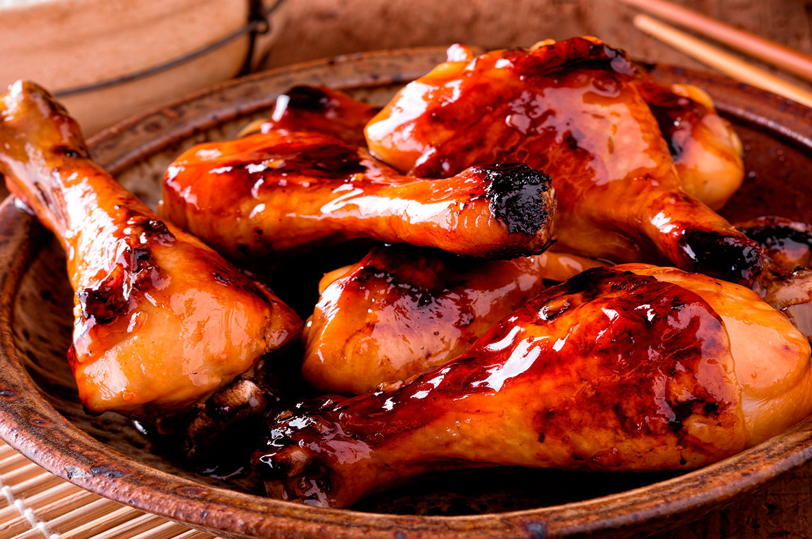

RECETA DE POLLO A LA MIEL
INGREDIENTES
- 6 Muslos de Pollo salpimentados.
- 2 Cdas de Miel.
- 2 Cdas de Salsa de Soya.
- 2 Dientes de ajo triturados.
- Aceite.
PREPARACIÓN
- Pasi 1: En un sartén a fuego alto, agr
- Paso 2: Una vez cocidos sácalos y colócalos en un plato aparte.
- Paso3:
- Paso4:
- Paso5:
- Paso6: Cocina por 6 minutos más y listo.
- Paso7: Sirve y disruta.